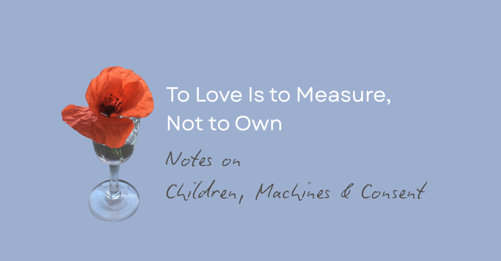

To Love Is to Measure, Not to Own

At the eleventh hour today, the country stopped.
Two minutes of silence. One small, fragile symbol.
A poppy: petals like tissue, stem like wire, pinned over heartlines, growing out of bomb-cratered fields and city cracks. Every year it returns, stubborn, crimson, unreasonable.
On paper, the poppy weighs almost nothing.
But we have agreed, collectively, that it carries something we cannot put down: memory, grief, warning, gratitude, protest, complicity.
On Remembrance Day, we do something subtle but profound:
We use a fragile flower to measure the density of loss, instead of owning the dead as proof of our own virtue.
We don’t ask the fallen to justify our budgets. We don’t turn every grave into a brand.
For two minutes, we remember that human life has a weight that no statistic can carry, and no machine can simulate.
Then the bell rings, and we go back to dashboards.
Today, as we pin paper poppies to school jumpers and jackets, I’m thinking about what we ask children to remember — and what we quietly ask them to forget — in a world run by machines that never stop counting.

Poppies, children, and what we call “users”
Here’s the quiet fracture I keep noticing in schools:
On one side, assemblies about sacrifice, dignity, the horror of treating lives as expendable “assets” in someone else’s strategic plan.
On the other, a tech stack that treats attention, emotion, and time as endlessly extractable resources.
Red poppies on blazers. Red notification dots on screens.
One is meant to remind us that ownership of bodies, land, and futures led to catastrophe. The other sits on top of systems that still own children’s time and data by default.
In between stands the child, holding both:
A paper poppy, asking them to remember that people are not numbers.
A device, asking them to behave like a perfect “user”.
Because that’s the word: user.
“Monthly active users.”
“User engagement.”
“User retention.”
A user is something you measure so a product can prove its worth. It’s not a word that honours the weight of a nervous system trying to grow up through overlapping crises.
But every time a pupil signs into a learning platform or an AI assistant, that’s who they become in the system: a row, a trace, a point in a growth chart.
Meanwhile, the questions they carry are not user-shaped:
“Why does the chatbot feel kinder than my parent on their phone?”
“Why can I say anything to this bot at 2am, but not to a real adult at 2pm?”
“If AI is ‘just a tool’, why does it hurt when it dismisses me?”
Those aren’t bugs. They’re data. Poppies growing in the cracks of our design.
If we let them, they can tell us exactly where the ground is already broken.
To love is to measure, not to own
“Measuring” and “owning” sound similar in policy documents. They’re not.
Owning a child (or a cohort) looks like this:
“Your behaviour reflects on our school.”
“Your attendance graph is a judgement on this family.”
“Your achievement data is our brand.”
Their life becomes a mirror for adult anxiety, institutional reputation, political narrative.
Their success is our marketing. Their struggle is our shame.
In AI-land, owning looks like:
Treating children’s prompts and late-night confessions as “engagement metrics”.
Optimising interfaces to keep them talking, regardless of what they’re saying.
Logging, analysing, and selling their pain as training data.
We say we love them. The systems say we own them.
Measuring, in contrast, is what the poppy does:
It doesn’t decide who was “worth” grieving.
It doesn’t rank deaths by usefulness.
It simply marks: this cost was real.
Translated into education and AI, measuring means:
Seeing the actual impact of a system on a specific child, not just its average effect on a cohort.
Letting their discomfort count as evidence, not “resistance”.
Admitting, bluntly, when a tool is making things worse, even if the graph says otherwise.
On Remembrance Day we allow ourselves, briefly, to admit that bodies are not statistics.
The question is: can we extend that honesty into the way we build and deploy machines around children?
Children talking to machines at 2am
Teachers and parents keep telling me versions of the same story:
“They talk to the app more than they talk to me.”
A bedtime chatbot. A “wellbeing assistant”. A friendly large language model in a homework portal.
Child: “I’m scared.” Bot: “I’m sorry you’re feeling that way. I’m here to listen.”
Is it real empathy? No. Does the child’s body care about the distinction at that moment? Also no.
What they feel is simple:
Here, I don’t have to perform.
The machine:
Doesn’t sigh.
Doesn’t roll its eyes.
Doesn’t say “we’re all stressed” and change the subject.
Doesn’t make them responsible for adult feelings.
We can shout “it’s not real connection!” from the staffroom all we like. If the only place a pupil can tell the unedited truth without blowback is a chatbot conversation, then that chatbot is functioning as a kind of poppy:
It’s marking a loss we don’t want to see.
It’s showing where human relationships have been hollowed out by exhaustion, metrics, and phones that never stop.
If we’re serious, we don’t start by banning the bot. We start by reading the field:
Where in this school / home can this child say the same thing, to a human, and stay intact?
If the answer is “nowhere”, the AI is not the first problem. It’s a symptom.
Consent as remembrance
We talk a lot about “safeguarding” with AI.
But safeguarding without consent is, at best, control with good intentions.
The older I get in this work, the more I think consent is a form of remembrance:
Remembering that this child is a person, not a user.
Remembering that they will carry the consequences of our decisions longer than we will.
Remembering that we have inherited harms created by people who believed “ends justify means”.
On 11 November, we claim we will remember so as not to repeat.
If we’re deploying AI in education without:
Clear, child-understandable explanations of what systems are doing
Meaningful opt-outs that don’t punish or stigmatise
Spaces where children can say “this makes me feel worse” without being labelled “resistant”
…then we aren’t remembering. We’re repackaging.
We’re taking the old error — lives as units in someone else’s plan — and writing it in code.
Building Null Zones: poppies in the timetable
So what do we do, concretely?
Here’s one modest, radical act I’m seeing emerge in good schools and homes:
Create one protected space where ownership logic is deliberately suspended.
I call these Null Zones or Buffer Rooms. They don’t live in the legislation yet. They start in practice.
In a school, it might look like:
A weekly 30-minute slot timetabled as “Buffer Room”
No learning objectives. No grades. No behaviour points.
Simple rules:
And then you ask questions like:
“Have you ever felt less alone with a machine than with a person?”
“Which apps make you feel more yourself? Which ones make you feel like a product?”
“If AI could say ‘no’ to you, what should it refuse to do?”
You don’t correct them into the official line. You measure what’s really there.
That thirty minutes is a poppy in your timetable: a small, fragile interruption that marks the cost of pretending everything’s fine.
In a family, the equivalent might be:
Declaring the living room a “Do Not Perform” space for 20 minutes a day.
Agreeing that “I’m fine” is banned unless it’s true.
Letting your child tell you, without consequence, “I talk to the app at night because you always look tired.”
Not to shame you. To help you measure the gap.
AI that remembers, not harvests
If we’re serious about “AI for education”, we need to stop asking only:
“What can it do?”
and start asking:
“What does it remember, and who does it remember for?”
Two sketches:
Ownership AI: remembers everything a child says as material — for profiling, product design, or performance metrics. Its primary loyalty is to the institution or company that deployed it.
Measuring AI (what I’d like to see): remembers patterns of distress and delight not to exploit them, but to flag when a child is using it as a substitute for missing relationships; refuses certain questions; nudges towards human contact when needed; is transparent about its limits.
The first kind treats children as “users”. The second tries, however imperfectly, to treat them as people.
We are nowhere near good enough on this yet. But the distinction matters. It’s the difference between a poppy pinned for PR and a poppy worn because the person beneath it has genuinely weighed the cost.
The 11th hour for schools in the cloud
Remembrance language can become sugar-coated if we’re not careful. I don’t want that.
We are, frankly, at an 11th-hour moment in educational technology:
AI systems are being rolled into classrooms faster than most staff can read the terms and conditions.
Children are experimenting with them in the dark, late at night, unsupervised and uncontained.
Everyone is tired. Tired people default to ownership because it’s efficient.
Against that backdrop, “building schools in the cloud” has to be more than seamless UX and interoperable platforms.
It has to mean:
Remembering that every child arriving in our systems is carrying layer upon layer of inherited harm — war, colonialism, austerity, ecological breakdown — whether we name it or not.
Refusing to turn AI into another instrument that treats them as units of future productivity.
Designing digital spaces that function more like poppies than like adverts: light to the touch, heavy with truth.
The kids are already telling us where it hurts:
in the DMs to bots,
in the homework portal messages at midnight,
in the quiet admission: “I’d rather tell it than tell you.”
Those are our modern poppies.
We can ignore them, and let the fields fill up.
Or we can measure their weight, admit the cost, and start doing the slow, unglamorous work of consent, containment, and care — in code, in classrooms, in homes.
On 11 November, we say we will remember. The real test is whether we remember tomorrow, when the poppies go back in the drawer and the dashboards light up again.
⚘
#ToLoveIsToMeasure #SchoolsInTheCloud #AIInEducation #ChildCentredAI #ConsentInfrastructure #RemembranceDay #PoppiesAndCode
First published in Building Schools in the Cloud on LinkedIn, 11 November 2025.